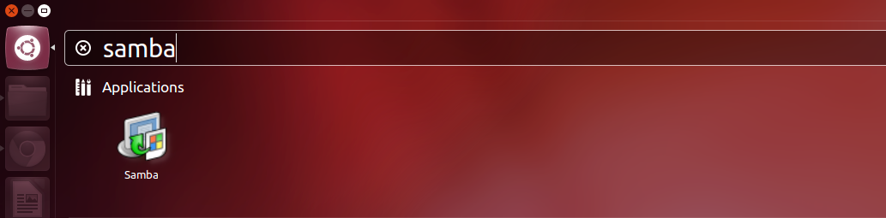
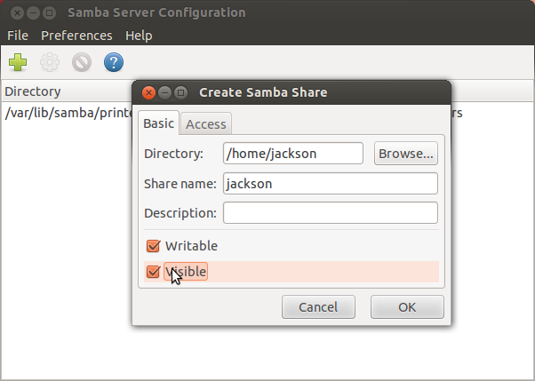
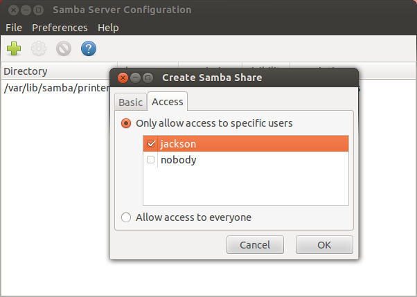
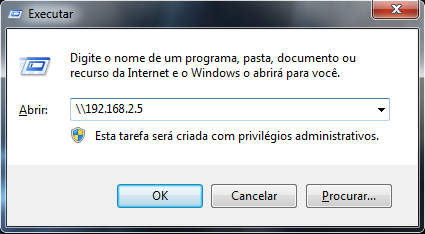
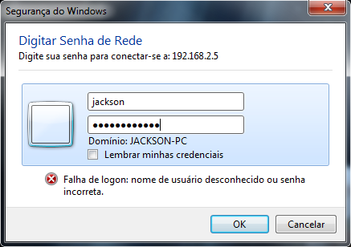

Configuração - Servidor(){
Software Livre
Configurando o Samba como servidor de dados
Primeiramente, abra a ferramenta de configuração do Samba.

Abrindo a ferramenta de configuração do Samba

Criação de compartilhamento no Samba - Basic
Clique em "Add a Samba Share". Na aba "Basic", selecione o diretório que deseja compartilhar e as permissões para a pasta compartilhada.

Criação de compartilhamento no Samba - Access
Na aba "Access", selecione quem terá acesso ao conteúdo compartilhado.
Agora, reinicie o serviço do Samba pelo terminal:
$ sudo restart smbd

Acessando os arquivos compartilhados
Pronto, a pasta selecionada já está compartilhada. Para acessá-la a partir de um computador na rede pelo Windows, abra o Executar e digite o IP do computador precedido por duas barras invertidas.

Digite o nome de usuário e senha do Samba
Será solicitado nome de usuário e senha, que são aqueles que foram criados para o Samba.
Após ter feito login, terá acesso ao que foi compartilhado.
Referências:
}